| Previous | Table of Contents | Next |
When the algorithm terminates, the final values of G[1],...,G[N] correspond to the rightmost column of Table 35.2, that is, to g(n,M) for n = 1, 2,..., N. Thus, the values of G(1),...G(N – 1) are produced as a by–product of the computation of G(N).
Note that each evaluation of G[n] requires one addition and one multiplication and that G[n] is evaluated a total of NM times. Thus, the algorithm requires NM additions and NM multiplications for computation of G(N).
Example 35.3 Consider the central server model of Example 35.1 again. Using the convolution method, we can compute G(N) as shown in Table 35.3. The first row of the table is initialized to all 1’s. The first column consists of successive powers of y1, which in this case happens to be 1. Each of the remaining entries is obtained using the entry to its left and the entry above it in Equation (35.5). For example, 1 + 3 × 1 gives 4; 1 + 3 × 4 gives 13; 1 + 3 × 13 gives 40; 4 + 2 × 1 give 6; and so on.
| TABLE 35.3 Computing Normalizing Constant for Example 35.3 | |||
|---|---|---|---|
| n | yCPU = 1 | yA = 3 | yB = 2 |
| 0 | 1 | 1 | 1 |
| 1 | 1 | 4 | 6 |
| 2 | 1 | 13 | 25 |
| 3 | 1 | 40 | 90 |
Once the G(1),...,G(N) are known, other performance statistics can be computed as follows:
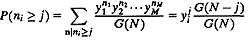
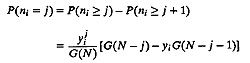
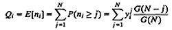
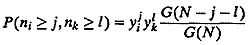
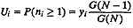
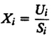
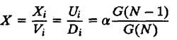
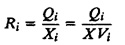
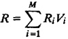
We now illustrate the algorithm using an example.
Example 35.4 Once again, consider the central server model of Example 35.1. In Example 35.3, we computed the normalizing constants for this system. From Table 35.3 we know that G(1) = 6, G(2) = 25, and G(3) = 90.
- 1. Queue Length Distributions: The probability of having two or more jobs at disk A is
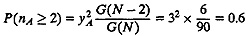
We can also obtain this probability from Table 35.1 by adding the probabilities for all states in which nA is 2 or 3. There are three such states in the table, and their probabilities are 0.2, 0.3, and 0.1, which add up to 0.6, as already computed.
The probability of exactly one job at disk A is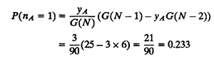
Again, from Table 35.1, we see that there are three states with nA = 1; the sum of their probabilities is 0.133 + 0.067 + 0.033 = 0.233.
The probability of exactly zero, two, and three jobs at disk A can be similarly computed: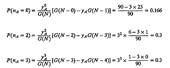
Now that we have a complete distribution of queue length at disk A, we can compute its mean, variance, and any higher order statistics: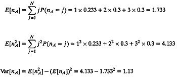
The probability that both disks are busy is given by the joint probability of having one or more jobs at disk A and one or more jobs at disk B: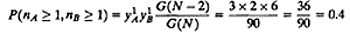
Again, this probability can be obtained from Table 35.1.
The mean queue lengths at the three service centers are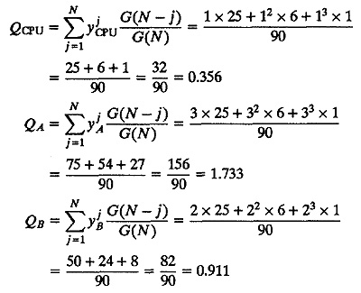
Notice that QA is the same as E[nA] computed earlier using queue length distribution. Also, as a check, note that the three queue lengths sum to 3, which is the total number of jobs in the system.- 2. Utilizations: The CPU utilization is
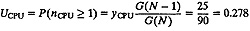
- 3. Throughputs: The system throughput is
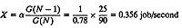
The CPU throughput isXCPU = XVCPU 0.356 x 20 = 7.12 jobs/second
- 4. Response Times: The mean response times of the three devices are
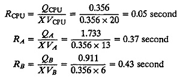
The mean system response time as given by the general response time law is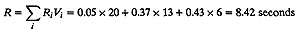
As a check, we can use Little’s law to find the mean number of jobs in the system:N = XR = 0.356×8.42 = 3
The convolution algorithm, as specified so far, applies only to networks of fixed–capacity service centers. It can be extended to networks of load–dependent service centers. While general load–dependent service centers are beyond the scope of this book, we do want to allow the possibility of the network having one set of terminals that are modeled as delay centers with think time Z. The easiest way to compute G(N) in this case is to assume that the terminals are zeroth devices and the initialization Equation (35.6) is modified as follows:
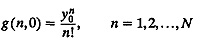
Here, yo = αZ is the scaled value of the think time. The system state is now represented by a (M + 1)–component vector n = {n0,n1,...,nM}, where ni is the number of jobs at the ith device and n0 is the number of jobs at the terminals. Obviously, all queue lengths ni must be nonnegative (ni≥0), and they should add to 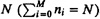. The state probabilities are given by
| 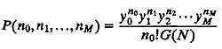 | (35.8) |
If there is more than one delay center in the network, they can all be combined into one service center by adding their total demands Di to Z. The computed value of G(N) is still correct, and n0 now represents the sum of queue lengths at all delay centers. The mean queue lengths at individual delay centers are proportional to their service demands Di.
| Previous | Table of Contents | Next |